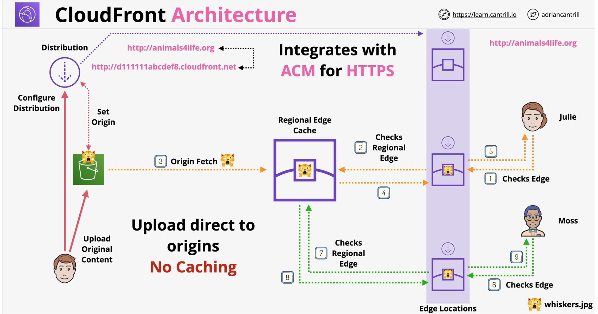
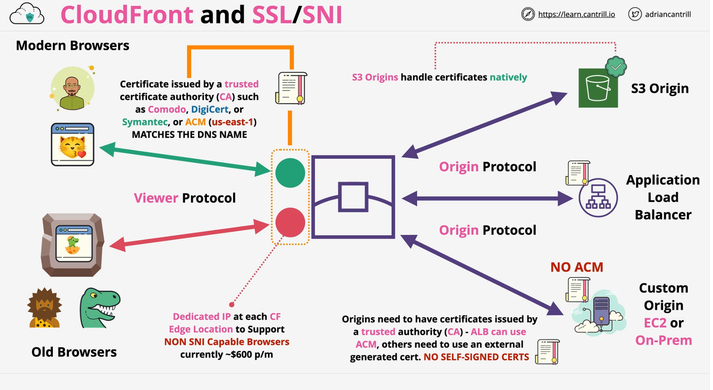
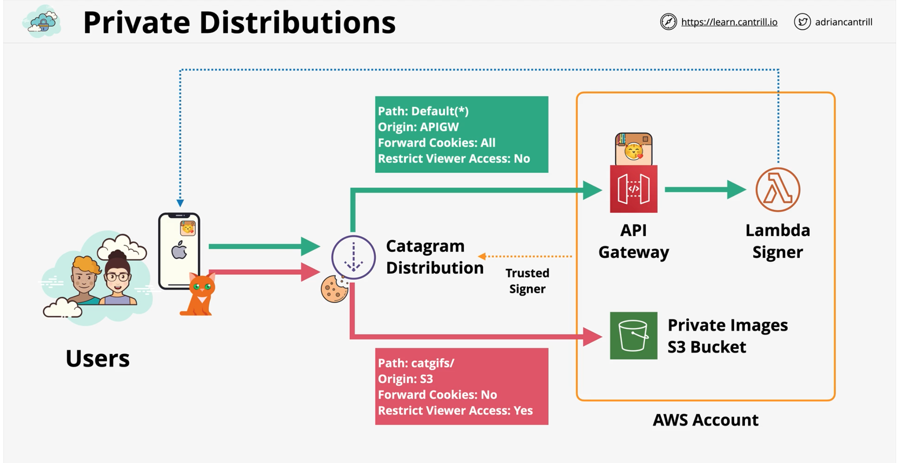
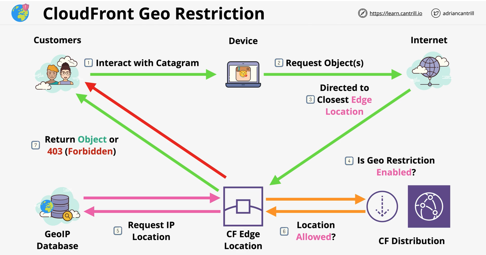
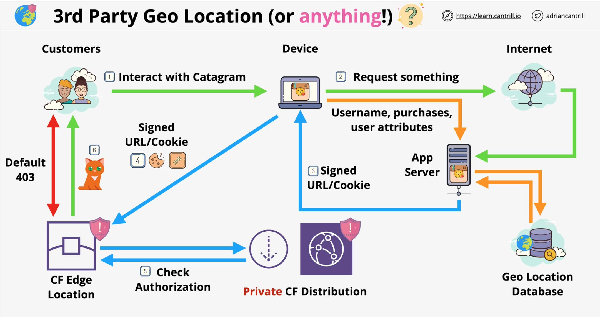

CloudFront
Overview
CloudFront is a Content Delivery network (CDN) within AWS. - higher latencies and slow transfer speeds (customers across the globe) - solve by using caching and efficient global network
Terms
- Origin - S3 origin or custom origin (publicly routable IP address)
- Distribution - configuration unit of CloudFront
- can have multiple origins configured
- Edge Location - Local cache of your data
- smaller than regions - 200 edge locations
- Regional Edge Cache
- only used by custom origin NOT S3 origin
- larger version of edge location. Provides another
- provides another layer of caching

Cache Behavior
- Default () - path-pattern*
- trusted signers/groups for private
To delete all cache behaviors in an existing distribution, update the distribution configuration and include only an empty CacheBehaviors element.
https://docs.aws.amazon.com/cloudfront/latest/APIReference/API_CacheBehavior.html
TTL
- more frquent cache HITS == lower orign load
- Default TTL (defined in the behavior) == 24 hrs (validity period)
- Minimum TTL and Maximum TTL - default applies if not specified
- limits the object level TTL values
- Origin Header: Cache-Control max-age (seconds)
- Origin Header: Cache-Control s-maxage (seconds)
- Origin Header: Expires (Date & Time)
- Headers can be set using custom origin or s3 origin (via object metadata)
Invalidations (cache)
- Cache invalidation - performed on a distribution
- applies to all edge locations - process takes time
- Examples of cache invalidations - correct errors
- /images/whiskers1.png
- /images/whiskers*
- /images/*
- /*
- Versioned file names .. file_v1/file_v2/file_v3
- avaoid caching issues - names are different
- logging is more clear
- no frequent cached invalidations
SSL
- CloudFront Default Domain Name (CNAME)
- ex - https://random.cloudfront.net/
- SSL supported by default ... *.clodufront.net cert
- Alternate Domain Names (CNAMES) ex- cdn.something.com
- verify ownership (optionally HTTPS) using a matching certificate
- generate or import certs in ACM
- add certficate in us-east-1 for global service like CloudFront
- Cloudfront to allow on one of the options: HTTP or HTTPS, HTTP => HTTPS, HTTPS Only
- Two SSL connections Viewer => CloudFront & CloudFront => Origin
- both need valid public certificates (intermediate certs)
SNI - Server Name Indication
- SNI is a TLS extension, allowing a host to be included -- free of cost
- host header routing ->> allows multiple hosts/certs behind a single IP
- old browsers don't support SNI .. CF charges extra for dedicated IP ($600)

Origin Types an Architecture
-
Origins
- aws s3
- aws media package channel endpoints
- aws media storage container endpoints
- everything else (custom origin) -- web servers
-
Custom origin options:
- SSL protocol - TLS certs
- origin id, domain name, path
- origin protocol
- custom ports
- custom headers
- connection configuration
Caching Peformance & Optimization
- CACHE HIT = object returned from cache
- CACHE MISS = object returned from origin
- Headers, Cookies and Query String Parameters can be configured to be forwarded to the origin or not
- Forward what the application needs
- Cache based on what can change the objects
- The more things are involved in caching - the less efficient
Origin Access Identity (OAI) - S3 Origin
- Onlyapplicable to S3
- type of identity
- assocaited with Cloudfont Distribution
- CloudFront 'becomes' that OAI
- OAI can be used in the s3 bucket policies
- DENY all but ALLOW one or more OAI's in bucket policy
Securing Custom origins
- custom origin to require some custom headers
- custom headers are injected within the cloudfront
- custom origin to host behind firewall which allows only public IP ranges of cloudfront
Private Distributions
- Public - open access to objects
- Private ... requests required signed Cookie or URL
- 1 behavior --> whole distribution PUBLIC or PRIVATE
- Multiple behaviors - combination of PUBLIC and PRIVATE
- CloudFront Key
- created by root account user and tied to a specific AWS account
- account with cloudfront key can be added as TRUSTED SIGNER
- will require signed cookie/url
- Signed URL
- provides access to one object
- Legcy RTMP distributions cant use cookies
- use URL's if the client does not support cookies
- Signed Cookies
- Use for groups of files/all files of a type - .jpeg
- maintain the URL with signed cookies

CloudFront Geo Restriction
| CF Geo REstriction | 3rd party Geolocation |
|---|---|
| Whitelist or Blacklist - COUNTRY ONLY | completely customizable |
| GeoIP Database 99.8%+ Accurate | more accurate - can be filter on many attributesc |
| applies to the entire distribution | |
|  |  |
CloudFront Field-Level Encryption
- Client <==> Origin can be encrypted using HTTPS
- data transmitted within is treated like any other plain data
- Field Level encryption happens at the edge
- happens separately from the HTTPS Tunnel using public/private key
- private key is needed to decrypt individual fields
Lambda@Edge
- run lightweight lambda at edge locations
- adjust data between the viewer and origin
- only supports node.js and python
- runs in the AWS public space --> cannot access any VPC resource
- lambda layers not supported
-
different limits than normal lambda function
-
Use Cases
- A/B testing - Viewer Request
- Migration between s3 oriigns - Origin Request
- Different Objects based on Device - Origin Request
- Content By Country - Origin Request
ElasticCache
- in-memory database .. high performance
- managed redis and memcached -- as a service
- can be used to cache data - for READ HEAVY workloads with low latency requirements
- Reduces database workloads (expensive)
- Can be used to store Session Data (Stateless Servers)
- requires application code changes
| Memcached | Redis |
|---|---|
| simple data structure - string | advance structure- list, sets, sorted lists, bit-arrays |
| No replication | Multi-AZ |
| Mulitple Nodes(Sharding) | Replication(Scale Reads) |
| No backups | Backup & Restore |
| Multi-threaded | Transactions |